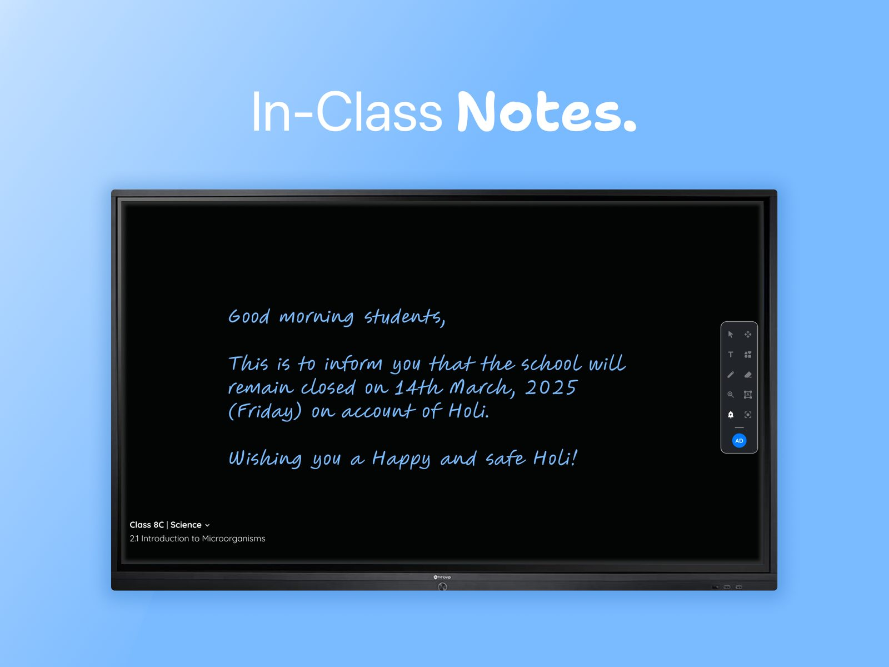

- Tata ClassEdge
- EdTech
- Interactive flat panel
In-Class Notes
Teachers capture the board in one tap and share it with every student, so nobody spends class copying notes.

Imagine this
A teacher writes a note on the board. Every student in the room copies it, word for word, into their own notebook.
The problem
High frequency, high importance, and inefficient
Copying from the board is redundant, slow and error-prone, and it eats into time meant for learning.
Redundant by design
The whole class copies the same note by hand, filling pages with copies of one board. Time meant for learning goes into transcribing.
Paced by the slowest
How long it takes depends on each student’s writing speed and focus, so the lesson waits while everyone catches up.
Room for error
Misread words, skipped lines and spelling slips creep in, especially for students who can’t see the board clearly.
No record, no visibility
If a student doesn’t write it down, the note is gone once the board is erased, and parents never find out it was shared.
Why I care
This one is personal
I had slow handwriting. The teacher would often wipe the board before I could finish copying the note.
To avoid the embarrassment, and a scolding from my parents for writing too slowly, I would rub out the half I had written or tear the page out of my notebook.
In-Class Notes removes that moment altogether. Every student gets the full note, exactly as it was on the board, however fast or slow they write.
The solution
One tap to capture, one tap to share
Key assumption
The users, teacher and students, both have access to interactive flat panels installed with our products.
- Capture the text area
The teacher selects the handwriting on the board to use as the notice.
- Review it as a notice
The handwriting becomes editable text, with options to format, rephrase or recapture it.
- Choose who gets it and send
Pick one or more classes and send the notice in a single tap.
- Clear the board
A prompt offers to erase the note, so the board is ready for the next lesson.
The impact
Less copying, more learning
- ~5 min
Saved per period
Note-taking time drops by about five minutes a period, which adds up to over 10 whole periods across an academic year.
- 100%
Accurate notes, always
The teacher is the source, so every student gets exactly what was on the board.
Inclusive by design
Backbenchers and visually impaired students can zoom into the infinite canvas to see the content clearly.
Streamlined and intentional
Teachers quickly create and send the note instead of dictating it or waiting for students to copy it.